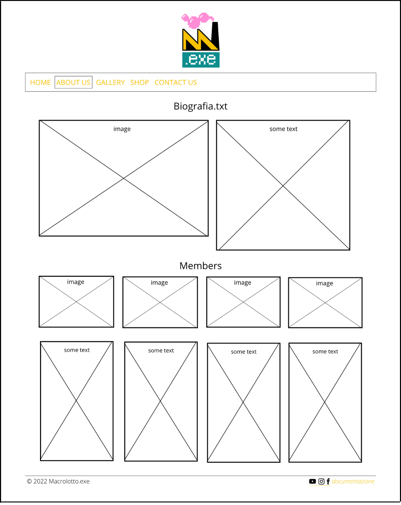
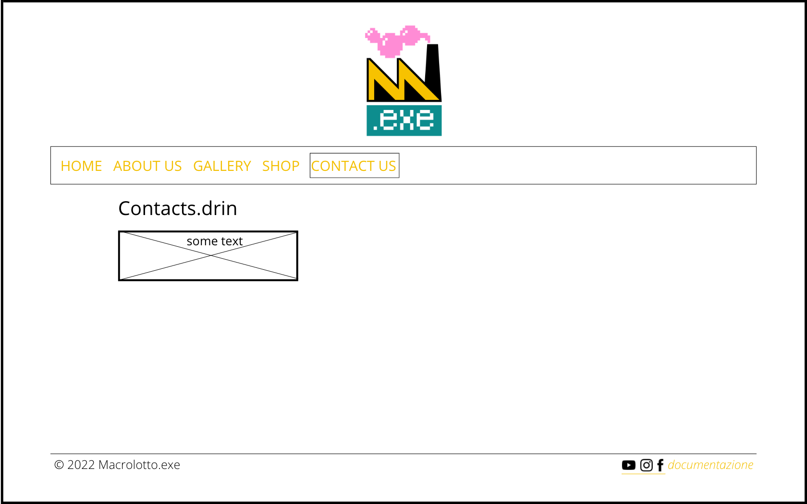
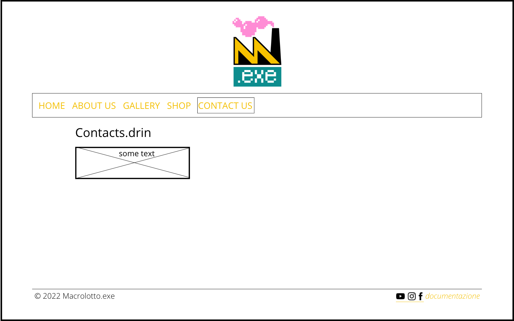
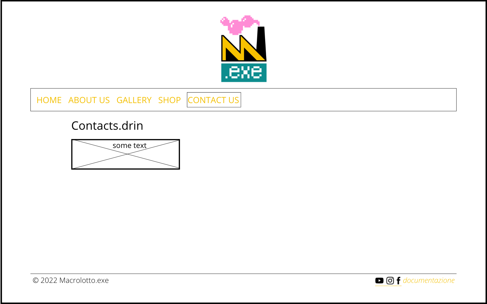

La scelta di realizzare il sito web per la band Macrolotto.exe nasce principalmente perchè oltre ad essere una loro amica sono anche loro fan, e mi sembrava una buona occasione poter realizzare un sito che colmasse la loro necessità di averne uno e la mia di crearne uno. Considerando però che loro possedevano già alcuni canali social e una propria immagine stilistica, ho cercato di essere il più fedele possibile alla loro impronta, dando al sito un accento vintage e vivace.
Project Management Plan
Benchmarking
Obiettivi
L'obiettivo principale del sito è quello di funzionare da raccoglitore biografico della band, utile sia a chi la conosce già ma anche a coloro che per la prima volta ne sentono parlare.
Target utente
Gli utenti a cui ho pensato di rivolgere il sito, sono costituiti da un pubblico giovane-adulto che rispecchi quindi la fascia 17-30 anni. Ciò non toglie che chiunque altra persona di qualsiasi età possa essere interessata a scoprirlo, è infatti, piuttosto che l'età, la passione per il genere musicale indipendente a richiamare l'attenzione sul sito.
Competitors
Per quanto riguarda i competitors
Struttura e layout
Architettura del sito
Wireframe


Look and feel
Per quanto riguarda la scelta dei font, ho utilizzato la libreria offerta da Google, Google Font, e ho scelto lo stesso font per tutti i testi del sito, Quicksand, così da non creare discordanza, cambiandone solo il peso e la grandezza in base all'importanza del testo.
Linguaggi e strumenti
Linguaggi
- HTML
- CSS
- JavaScript
Strumenti
- SublimeText 3.2.2: per la scrittura in HTML e CSS
- Bootstrap: per le istruzioni di alcuni layout delle pagine
- Google Font: per la scelta della font
- SchoolW3: per le istruzioni di HTML e CSS
- Adobe Color: per la scelta dei colori
- Canva: per la modifica delle icone dei social, per la creazione dello sfondo e per la creazione del Wireframe
- Instagram, Whatsapp e Facebook: per la promozione del sito web
- Google Analytics: per l'analisi delle visualizzazioni del sito web
Communication Strategy
Background
text
Obiettivi comunicativi
L'obiettivo del progetto è quello di raccontare l'essenza della band, tramite testi scritti e visivi. Grazie alla funzione di contenitore che possiamo fargli assumere, il sito è in grado di contenere sia una parte pressochè storica (come la loro formazione) ma anche contemporanea, che segua gli eventi a cui partecipa (grazie, ad esempio, agli album fotografici) o le novità che progetta (come le t-shirt ricamate).
Target audience e messaggio
Il target a cui è rivolto il sito è compreso nella fascia d'età dai 17 ai 30 anni. A questi possiamo aggiungere in generale le persone appassionate di musica indie-pop che dispongono di un dispositivo in grado di accedere al web (quindi se non si è in possesso di un device idoneo e/o di una connessione ad internet, sarà impossibile accedervi). Solitamente, le persone raggiungono il sito grazie alla promozione sui social network oppure perchè ne sentono da parlare da amici o conoscenti. In assenza di uno di questi due metodi sarà più difficile venire a conoscenza dell'esistenza di questo. Nella realizzazione di questo progetto, vorrei che il pubblico del sito aumentasse la conoscenza di band emergenti. Inoltre, se si tratta di un pubblico appartenente alla stessa città dei ragazzi della band, oltre alla conscenza di band emergenti, potrebbero scoprire una nuova band del territorio.
Promozione
Per la promozione del sito, ho scelto di condividere la pagina su tre piattaforme: i due social network che uso maggiormente (Instagram e Facebook) e l'applicazione di messaggistica per eccellenza, Whatsapp. In tutti e tre i casi mi avvalgo anche del metodo passaparola, così da raggiungere più persone.

 
